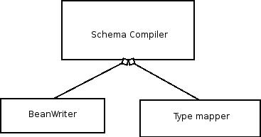

Axis2 Databinding Framework
This document aims to provide an architectural overview of the Axis2 Databinding Framework (referred to as ADB from here onwards) and be a guide to anyone who wants to use and modify ADB. The information is presented under the following topics.
Content
- Introduction
- Architectural Overview
- Code and Dependencies
- Invoking the ADB Code Generator
- Generation Modes
- Deep into Generated Code
- Known Limitations
- Want to Learn More?
Introduction
The objective of the Axis2 Databinding framework is to provide a lightweight and simple schema compiler/Java bean generator for Axis2. By no means is it intended to be a fully functional schema compiler like XMLBeans. Note that ADB is written in a fashion that allows it to be used as a stand-alone schema compiler and also to be extended to generate code for other languages.
Architectural Overview
ADB is built on a modular architecture that allows it to utilize a pre-configured writer depending on the configuration. The 'big block diagram' for the code generator architecture is depicted below.

ADB utilizes the WS-Commons XmlSchema library for reading the Schema. The object model for the schema comes in the form of an XmlSchema object. The schema compiler keeps an instance of the writer (in the default case it's the JavaBeanWriter) which actually writes the classes. The writers may use whatever technique they prefer, in the case of the JavaBeanWriter, it uses an XSLT template. The SchemaCompiler also uses a typemapper object that tells it what classnames to use for the QNames that it encounters. This type mapper is also part of the configuration and the users can override the default type mapper by overriding the property setting.
Code and Dependencies
As explained in the previous section, the schema compiler depends on the WS-Commons XmlSchema library. The XSLT transformations are dependent on the JVM's DOM implementation (either Crimson or Xerces) which means that the underlying JVM should be 1.4 or higher. Apart from that ADB has no dependencies on any other special jar files. The code for the schema compiler is completely in the org.apache.axis2.schema.* package. This package resides in the codegen module of the Axis2 source tree.
The following are the important classes and files of ADB:
- SchemaCompiler - The work horse that really compiles the schema into classes.
- BeanWriter - BeanWriters handle the the actual rendering of the classes. BeanWriter is the interface that writers need to implement in order to be used by the SchemaCompiler.
- JavaBeanWriter - The default implementation of the BeanWriter interface.
- TypeMap - represents the interface that the schema compiler uses to find class names for a given QName.
- JavaTypeMap - the default implementation of the TypeMap
- ADBBeanTemplate.xsl - the XSLtemplate the JavaBeanWriter uses.
- Schema-compile.properties - The property file for the schema compiler
The easiest way to obtain the ADB binaries is to run the maven build for the Axis2 adb-codegen module. This will generate the axis2-adb-codegen-{$version}.jar inside the target folder which is directly usable when the ADB schema compiler is required.
The runtime dependencies for the ADB generated classes is in the Axis2 adb module and the kernal module. Hence to compile and work with the generated classes the axis2-adb-{$version}.jar and axis2-kernal-{$version}.jar needs to be in the classpath in addition to other dependencies such as StAX, Axiom, Commons-logging and javax.activation.
Invoking the ADB Code Generator
As a Standalone Schema Compiler
ADB comes with a XSD2Java code generator that allows the schemas to be compiled just by giving the schema file reference. This main class is presently rather primitive and does not provide much control over the code generation process. This is bound to improve in the near future.
XSD2Java accepts the following parameters:
- The Schema file name - This should be a complete file name pointing to the local file system
- The output folder name - This should be the name of a folder within the local file system
Since the code generator presently has no validations built into it, the compiler is likely to show various error messages if these parameters are not supplied properly.
Through the API
This is the only way to harness the full potential of the schema compiler. The current Axis2 integration of ADB happens through this API. The most important classes and methods of the Schema compiler are as follows.
- SchemaCompiler - Constructor
The constructor of the schema compiler expects a CompilerOptions object. This compilerOptions object is more of a holder for the parameters that are passed to the SchemaCompiler. The only mandatory parameter in the CompilerOptions is the output directory.
- SchemaCompiler - Compile(XMLSchema schema)
The compile method to call for a single schema. The expected object is a XMLSchema which is part of the XmlSchema library.
- SchemaCompiler - Compile(List schemaList)
Similar to the previous method but accepts a list of schemas instead of one.
For a comprehensive code sample in invoking the schema compiler through the API, the following classes would be helpful. One would also need an understanding of the generation modes of the ADB schema compiler when using it through the API. Hence the following section includes a brief description of the generation modes.
- org.apache.axis2.schema.XSD2Java
- org.apache.axis2.schema.ExtensionUtility
Generation Modes
ADB extension provides several generation modes for the data bound classes.
- Integrated Mode
In this mode the classes are generated as inner classes of the stub, message receiver or the interface. The ADB framework does not actually write the classes but instead provides a map of DOM document objects that contains the model for the databinding classes. The Axis2 codegen engine in turn parses these documents within its own XSLT parser to create the necessary classes. Implementers are free to use these models differently for their own particular needs.
Integrated mode is intended to be used by tool builders.
- Wrapped Mode
In the wrapped mode, the ADB databinder generates one class that contains all the databound classes. This is convenient when the number of classes need to be limited.
- Expanded Mode
This is the usual mode where the code generator generates a class for each of the outer elements and the named complex types. The command line tool (XSD2Java) always generates code in the expanded mode.
The rules for generating code (described in the next section) applies regardless of the mode. Switching these modes can be done by passing the correct options via the CompilerOptions object. The following table lists the options and the effects of using them.
| Field Name in Options | Description |
| writeOutput | This determines whether to write the output or not. If the flag is on then the classes will be written by ADB. The default is off. |
| wrapClasses | This determines whether to wrap the generated classes. If the flag is on then a single class (with adb added to the end of the specified package) will be generated. The default is off. |
| mapperClassPackage | The package name for the mapper class. Please see the advanced section for details of the mapper class. |
| helperMode | The switch that determines whether to switch to helper mode or not. Please see the advanced section for details of helper mode. |
| ns2PackageMap | A map that stores the namespace name against the package name These details are used to override the default packages |
Deep into Generated Code
When the schema compiler is invoked (one-way or another) it generates code depending on the following rules:
- All named complex types become bean classes. Any attribute or element encapsulated in this complex type will become a field in the generated class. Note that the support for constructs other than xsd:sequence and xsd:all is not yet implemented.
- All top level elements become classes. This is a rather obvious feature since unless classes are generated for the top level elements the handling of elements becomes difficult and messy!
- SimpleType restrictions are handled by replacing the relevant type with the basetype
Once the code is generated according to the rules it looks like the following. Consider the following schema:
<schema xmlns="http://www.w3.org/2001/XMLSchema" xmlns:xsd="http://www.w3.org/2001/XMLSchema" xmlns:tns="http://soapinterop.org/types" targetNamespace="http://soapinterop.org/types" elementFormDefault="qualified" > <import namespace="http://schemas.xmlsoap.org/soap/encoding/"/> <complexType name="SOAPStruct"> <sequence> <element name="varString" type="xsd:string"/> <element name="varInt" type="xsd:int"/> <element name="varFloat" type="xsd:float"/> </sequence> </complexType> <element name="myElement" type="tns:SOAPStruct"/> </schema>
For comprehension let us consider the expanded mode for the code generator. Unless specifically mentioned, the rest of this document assumes that the expanded mode of the code generation is used. This particular schema will generate the following two classes in the designated package, which in this case would be org.soapinterop.types. The package name is derived from the target namespace of the schema.
- MyElement.java
- SOAPStruct.java
As explained earlier, SOAPStruct refers to the complexType. MyElement is the class that refers to the element. Just as expected, the SOAPStruct bean has getters and setters for varString, varInt and varFloat which are String, int and float respectively. MyElement on the other hand has a single field representing the SOAPStruct object that it encapsulates.
The most important aspect of the generated code is that it encapsulates two methods for creating and serializing the beans. Note that to make this work, the generated beans implement the org.apache.axis2.databinding.ADBBean interface
The creator and serializer methods look like the following:
-
public javax.xml.stream.XMLStreamReader getPullParser(javax.xml.namespace.QName qName)This method returns a pull parser that throws the right events for this particular object. However there is a subtle difference between element based classes and complexType based classes
- An element based bean class (like MyElement.java in the example) will ignore the passed in QName. Instead of using the passed in QName it'll utilize its own QName which is embedded in the class under the constant MY_QNAME, during the code generation. Hence it is usual to call getPullparser() with a null parameter for elements.
- A ComplexType based bean class (like SOAPStruct.java in the example) will use the passed-in QName to return an instance of the ADBpullparser. This will effectively wrap the elements inside with an element having the passed QName
-
public org.apache.axiom.om.OMElement getOMElement( final javax.xml.namespace.QName parentQName, final org.apache.axiom.om.OMFactory factory){This method returns an OMElement representing the ADB bean object.
- Inside the getOMElement method an anonymous ADBDataSource class is created. This anonymous class implements a serialize() method where the serialization logic for that particular bean class is handled. Finally an OMSourcedElementImpl object with the above anonymous class type object as the data source is returned.
-
public static [Object].Factory. parse(javax.xml.stream.XMLStreamReader reader) throws java.lang.ExceptionThis method returns a populated instance of the class in question. Note that
[Object]
will be replaced by the actual class that contains this method. Say for SOAPStruct the method looks likepublic static SOAPStruct.Factory. parse(javax.xml.stream.XMLStreamReader reader) throws java.lang.ExceptionAlso note that the above parse method is available in the Factory nested class within the relevant top level class. Hence one will have to get the static Factory instance before calling the parse method.
An Example!
Consider the following XML fragment
<myElement xmlns="http://soapinterop.org/types"> <varInt>5</varInt> <varString>Hello</varString> <varFloat>3.3</varFloat> </myElement>
Enthusiastic readers might already have figured out that this XML fragment complies with the Schema mentioned above. The following code snippet shows how to build a populated instance of MyElement with the XML above:
XMLStreamReader reader = XMLInputFactory.newInstance().
createXMLStreamReader(
new ByteArrayInputStream(xmlString.getBytes()));
MyElement elt = MyElement.Factory.parse(reader);
Optionally, the above xml fragment can be reproduced with the following code fragment:
OMElement omElement = myElement.getOMElement
(MyElement.MY_QNAME, OMAbstractFactory.getSOAP12Factory());
String xmlString = omElement.toStringWithConsume();
Although this example takes on the tedious effort of creating a reader out of a String, inside the Axis2 environment an XMLStreamReader can be directly obtained from the OMElement! Hence, the parse method becomes a huge advantage for hassle free object creation.
Similarly the reader obtained from the object can also be utilized as needed. The following code fragment shows how to utilize the getPullParser method to create an OMElement :
XMLStreamReader reader = elt.getPullParser(null); OMElement omElt = new StAXOMBuilder(reader).getDocumentElement();
That's all to it! If you are interested in learning more on ADB the following documents may also be helpful. However, be sure to check the limitations section that follows if you are planning to use ADB for something serious.
Known Limitations
ADB is meant to be a 'Simple' databinding framework and was not meant to compile all types of schemas. The following limitations are the most highlighted.
- Complex Type Extensions and Restrictions.
Want to Learn More?
- Advanced features of the ADB code generator - explains xsi:type based deserialization and helper mode
- Tweaking the ADB Code Generator - explains available mechanisms to extend ADB and possibly adopt it to compile schemas to support other languages.
- ADB and Axis2 Integration - explains how the ADB schema compiler was attached to the Axis2 framework